FreeLCS User Manual
FreeLCS stands for Free Loudness Correction Server. The
software lets you easily set up a server that shares one of it's folders to
the network where users can drop audio files to be loudness corrected
according to the EBU R128 loudness recommendation. The server also creates a
loudness history graphics file which gives visual feedback of the internal
loudness variations in a file.
The software is very fast even on modest hardware giving 15 times faster
than realtime processing (16 bit stereo files, TruePeak measurement turned
on) on a server with one Intel Core 2 Duo processor, 2 GB Ram, 3 internal
Sata disks in software RAID 0.
FreeLCS uses other open source programs to get the job done (Linux,
libebur128, gnuplot, FFmpeg (optional), sox, mediainfo).
- Calculates loudness according to EBU R128 for files dropped into the
HotFolder.
- For each file it creates a loudness history graphics file which gives
visual feedback of the loudness variations in the file.
- Creates loudness corrected versions of each file dropped in the
servers HotFolder.
- Natively supports wav, flac and ogg
formats.
- If user installs FFmpeg then all formats supported by it can be
processed. FFmpeg supports a large number of formats.
- Supports files with several audio streams. Each stream is demuxed to
a separate file and loudness corrected.
- Even video files can be dropped in for processing. Audio streams are
demuxed from the file and processed.
- Supports channel counts from mono to 5.1.
- Takes advantage of multiple processor cores to run calculations
simultaneously.
- Uses a protective limiter to prevent clipping in cases where volume
must be increased.
- Automatic file deletion after a set time.
- Possible error messages are emailed to the admin.
- All software is free and Open Source.
- Very easy to use, just drop in your file and copy back the corrected
version.
- Easy to integrate in many workflows.
- Modest hardware requirements.
- Written in Python 3.

- You need a computer with at least 2 processor cores.
- 2 GB of RAM (there probably is not much advantage in having
more).
- Ubuntu Linux 12.04. This version of Ubuntu will be supported by
Canonical until April 2017, meaning there will be security updates for 5
years after the release.
- A person that is able to set up and update an Linux server.
- 1 Gbit ethernet is recommended.
- The FAQ discusses things like
supported formats, channel orders, etc.
Note:
Only files that have all audio channels of the mix in the same audiofile or
audiostream can be processed. For example you cannot process a 5.1 mix that
is split up to 6 separate files. Loudness calculation won't know these files
belong together.
- First install Ubuntu 12.04. If you don't know whether to choose 32 or
64 bit version, use the 32 bit one if you have less than 4 GB of ram and
64 bit if you have more.
- It is recommended to use the JFS - filesystem for all disks, since the
default filesystem ext4 has some quite serious bugs / design flaws that
are probably never going to be fixed. JFS was designed by IBM to be a
very fault tolerant filesystem for big database servers. It is able to
survive power outages and has been in serious production use for years.
- During the installation of Ubuntu, you are prompted to create the
first user. It is important to use a password for this account, do not
leave the password empty.
- After Ubuntu is installed log in as the first user you created during
installation.
- Next you must install python3 and idle3.
Press the "windows" key on the keyboard to bring up Ubuntu search
function, write: term
You should now see an icon for "Terminal", start it up by clicking on
it.
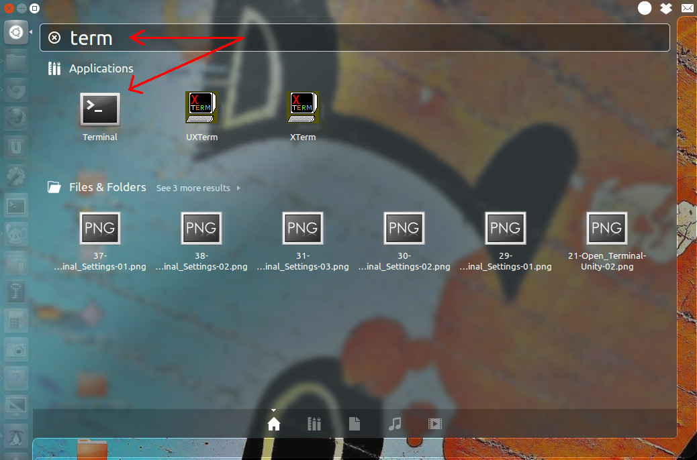
- Write the following command in the terminal window (you can copy and
paste it from below. Note that that keyboard command for paste in
Terminal is: shift + ctrl + v):
sudo apt-get -y install python3 idle3
- Press enter to run the command.
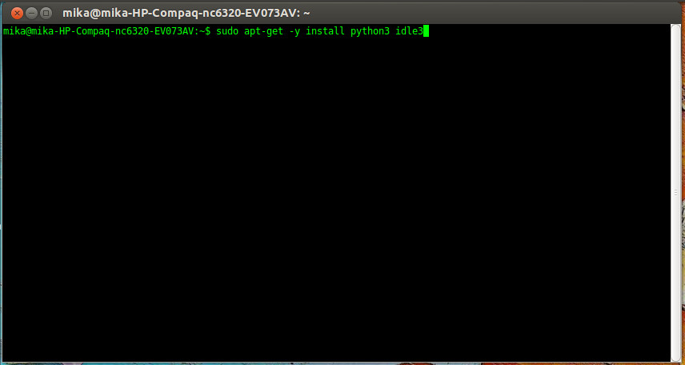
- The command will ask for your password. Type in the password and press
enter and python3 installation begins.
- Now that python3 is installed you can start the FreeLCS installation
program, it will ask you some details about how you would like the
loudness correction server to work and installs the rest of the programs
FreeLCS needs.
- Next unzip the FreeLCS - package by clicking it with the right mouse
button and selecting " Extract Here". A new directory
will be created and all FreeLCS files will be unzipped there.
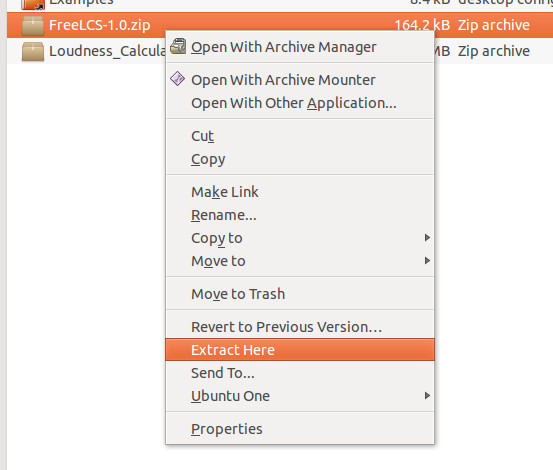
- Next we need to make the installer program executable. Navigate to the
directory that unzip created and right click the "installer.py"
program and select "Properties" from the menu.
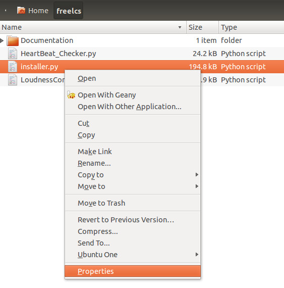
- Click the "Permissions" tab and select "Allow
executing file as program" and the click "Close".
The installer program can now be run.
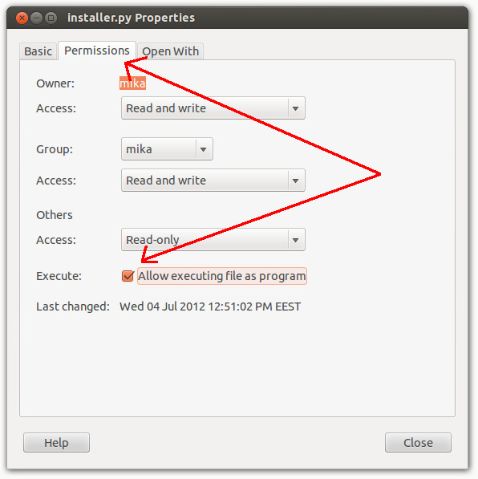
- Double click the "installer.py" - file. A window will
appear, click "Run".
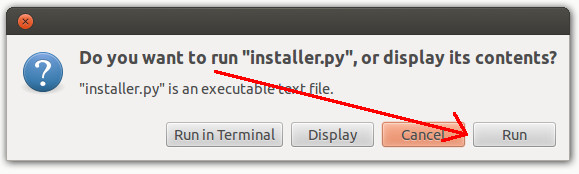
- The installer program starts. The first screen asks you to accept the
license agreement.
- FreeLCS is published under a permissive license that lets you use,
modify and distribute the program.

- Click "Next" when you have read the next window.
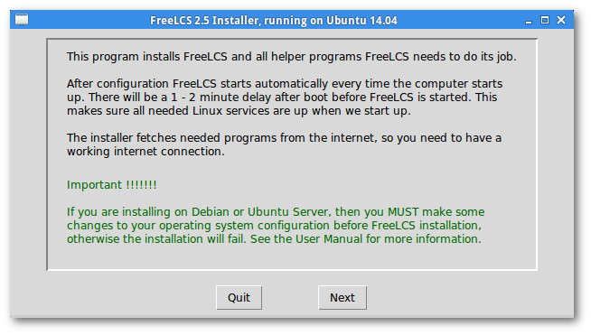
- The next screen will ask some details about how you would like
loudness correction to work.
- The first section will allow you to define the path to the target
directory. Some directories are automatically created inside this target
directory, the most important of these is the 'HotFolder'.
HotFolder is the folder where users can drop in files for processing.
HotFolder is by default located in: 'Target Directory /
LoudnessCorrection'.
- The second section allows you to select English or Finnish as the
language for directories and text in loudness history graphics files.
- 'Number of processor cores to use' lets you define
how many processor cores are used in loudness calculation and file
processing. When a file is being processed it always ties up two
processor cores. The speed of processing is most often dependent of the
raw speed of disks. If your HotFolder is on an fast disk for example a
Raid device, then it often speeds up processing if you select here more
processor cores than you actually have. For example for our test server
that has one Intel Core 2 Duo (dual core) processor, 2 GB of Ram, 3 x 1
TB Sata - disks in Raid 0 for HotFolder, the sweet spot for speed is six
cores even though we only have two. See: Optimizing
processing speed.
- The last section of the window lets you define how long files are
allowed to stay on the server before they are automatically deleted. The
default value here is 8 hours (480 minutes).
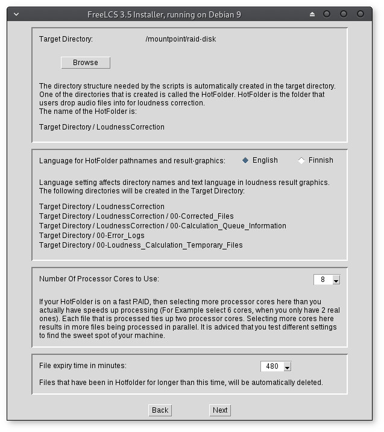
- The next window lets you select if you want to email possible error
messages to the admin.
- Input your email details here. Smtp - server is the email server you
use to send email out to the world. (Note that if you use Gmail,
the settings to use are displayed printed in light gray).
- You can add max 5 addresses that the messages are sent to. When you
have filled in email details, click the "Send" - button to test that
email sending really works. The bottom of the window displays a message
if email sending is succesful.
- IMPORTANT NOTE: Gmail two-factor authentication is
not supported. Google calls this feature two-step verification.
- HeartBeat Checker is a separate program that monitors
the health of the loudness correction program. If Loudness correction
crashes for some reason, HeartBeat Checker sends you email. If your
loudness correction server is mission critical then enable this option.
- (Note that the password you give here is not encrypted when it is
stored in the file "/etc/LoudnessCorrection_Settings.pickle".
Scripts can not securely encrypt anything since the scripts themselves
can be easily read and any encryption method used can be seen by
examining the source code :)
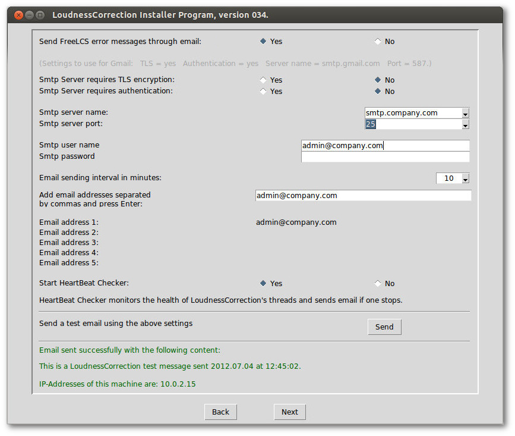
- The next window lets you select if you want "Html
progress report" written to the HotFolder. It is an
html-page that can be viewed with a web-browser and it displays the
loudness calculation queue inside the server. On the page you can see
how many files are waiting to be processed and names of the last 100
processed files and times they were processed. The "html
progress report" is a tool for the admin to see what's going
on inside the server, this feature is not needed by normal users.
Current time is displayed on the page also and if it is advancing then
the server is alive and well :) The default path for the "Html progress
report" is "Target Directory / LoudnessCorrection /
00-Calculation_Queue_Information /
00-Calculation_Queue_Information.html".
- The "Html progress report" is updated once in every 5 seconds. During
heavy file traffic the disk can become so busy that loudness correction
is not able to write the progress report on the disk as often as it
tries and if you view the page it seems to be frozen. This problem can
be solved by creating a ram-disk and writing the "Html progress report"
there instead of hard disk. Ram-disks can be written and read very
quickly and traffic jams on hard disks don't affect them at all.
- If you wan't the progress report to be written on a ram-disk, then you
can select which of the operating systems ram-devices are used to create
the ram disk. You need to change the default setting of "/dev/ram1"
here only if you know you have created other ram-disks for other
purposes and you know that device "/dev/ram1" is already used for
something else.
- Then you can select which user account is used when loudness
correction and heartbeat checker programs are run. These two programs
are always run as an "unprivileged" user. If you only created one user,
then this user is used by default.
- If you are not sure what to select for options described above, then
just leave the defaults as they are. Defaults are ok for most users :)
- The last option on this window lets you select which peak measurement
method you want to use: sample peak or TruePeak.
TruePeak is a method that takes into account invisible peaks that might
exist between audio samples. These peaks can go above the maximum
allowed 0 dBFS and cause distortion in DA - converters. TruePeak
measurement finds these hidden peaks and gives the true maximum peak
value in a file. TruePeak calculation slows down file processing by a
factor of 4. Sample peak simply finds the highest sample value in the
file and uses that as the highest peak value.
- The peak value is only important when loudness of a file falls below
the target -23 LUFS and needs to be increased. There is the possibility
that peaks will distort after the gain correction. In these cases a
protective limiter is used. If peak value after gain correction would go
over a set limit (-4 dBFS for sample peaks and -2 dBFS for TruePeaks),
then the file is limited before gain correction. The resulting peaks
after gain correction will be max. 1 dB higher than the set limit
resulting in max -3 dBFS / -1 dBFS peaks. Note that if you use sample
peak, there will always be 3 dB headroom for the invisible peaks to
exist and distortion is very unlikely. If you are unsure what to use
then select sample peak here, it is ok for most users.
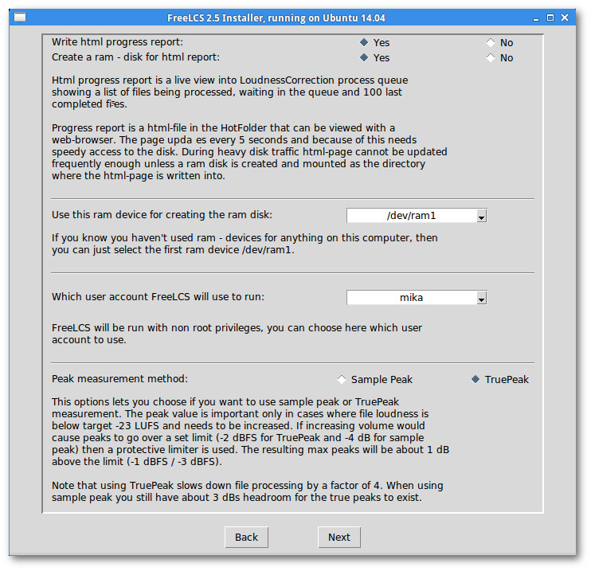
- The next window will let you select if you want the "HotFolder" to be
shared to the network. Select "Yes" if you want users to be able to drop
in files to the HotFolder through the network.
- If you select "Yes" the the samba-server is used for creating the
network share and the default samba configuration is shown on the
window. You can edit the configuration, but only change it if you know
your settings will work in your network. In all other cases just
leave the configuration as it is and click "Next".
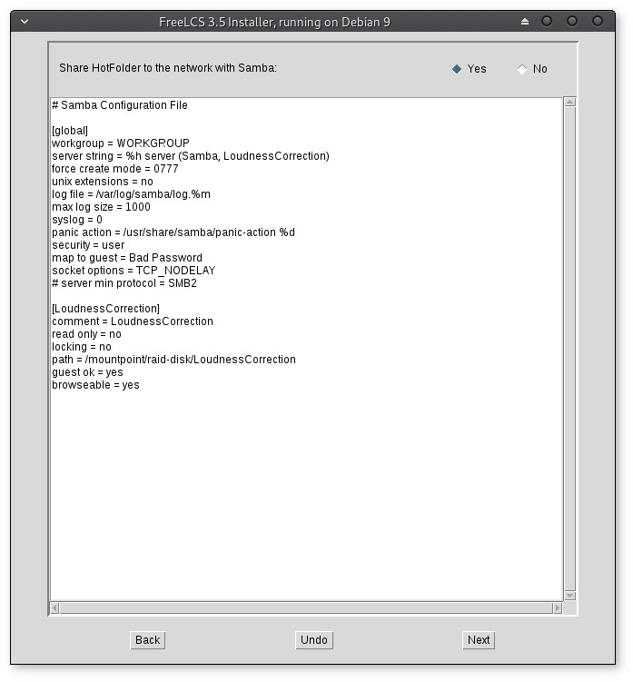
- The next window asks for the "root" - users password. It is the same
password that you set up for the first user you created during Ubuntu
installation. The root password is needed when FreeLCS files are written
into Linux system directories.
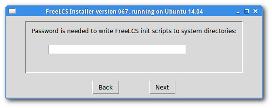
- The next window will list all external programs that FreeLCS needs.
Just click the "Install" - button and the installer
will download and install everything for you. (It will also download
libebur128 source code, compile and install it).
- The "Toggle" button can be used to force
reinstallation of all programs. You might need this if for example
libebur128 has just released an updated version which implements latest
changes in EBU R128 recommendation and you want this version right away.
The Toggle - button changes the state of all programs to "Not Installed"
and clicking it again changes the state back.
- The installation takes a couple of minutes and the window freezes
while the installer launches external programs to do the actual
installation. So don't try to click on anything on the window while the
installation is going on. The installer shows messages on the bottom of
the screen telling what it is doing at the moment.
- After all required programs are installed, the installer installs
FreeLCS scripts into Ubuntu's system folders.
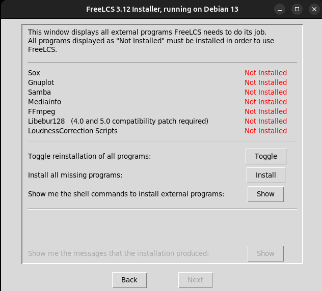
- When the installation is finished the window looks like the screenshot
below. Click the "Next" - button.
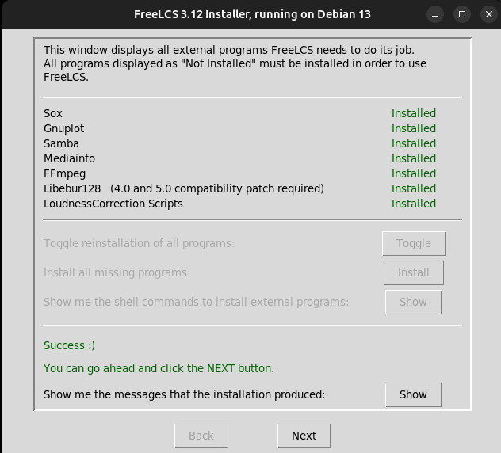
- The next window shows how you can install FFmpeg if you need it.
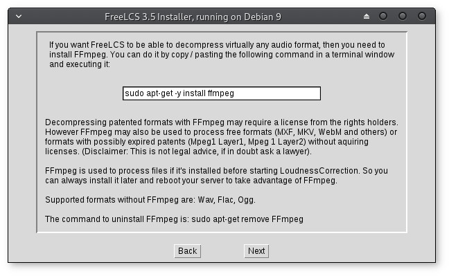
- The last window shows the terminal command to start LoudnessCorrection
immediately. The easiest way to start loudness correction however is to
restart the computer.
- Note that there is a deliberate delay for starting up loudness
correction and heartbeat checker after computer has booted up. This
makes sure all needed system services are up when our scripts run.

FreeLCS is made up of these files:
/etc/init.d/loudnesscorrection_init_script
This script starts up all FreeLCS programs. The script is started by a link
in the /etc/rc2.d - folder when the computer starts up
(See the file below). This file creates the ram disk, creates directories in
the HotFolder if they do not exist and sets their permissions so that
network users can not delete critical files and folders in the HotFolder.
This script also starts up LoudnessCorrection.py and HeartBeat_Checker.py -
programs.
/etc/rc2.d/S99loudnesscorrection_init_script
This file is a link that points to "/etc/init.d/loudnesscorrection_init_script"
this link is used to start up "/etc/init.d/loudnesscorrection_init_script"
when the computer starts up. Without this link the script "loudnesscorrection_init_script"
won't run.
/usr/bin/LoudnessCorrection.py
This is the main program of FreeLCS. It is the one that processes all files
dropped into HotFolder.
/usr/bin/HeartBeat_Checker.py
This program is started only if you selected it in the installer. It
monitors the health of the LoudnessCorrection.py - program and sends email
if LoudnessCorrection crashes.
/etc/LoudnessCorrection_Settings.pickle
The settings that you defined when running the installer are stored
in this file. LoudnessCorrection.py and HeartBeat_Checker.py both read their
settings from this file when they start up.
/etc/samba/smb.conf
This is the configuration file for the samba server that shares the
HotFolder to the network. Hotfolder is shared to the network only if you
selected "Share HotFolder to the network with samba"
= "yes" in the installer.
FreeLCS usage is very simple.
- First you mount FreeLCS HotFolder through the network.
- Then you drag some files to the HotFolder .
- A couple of minutes later you can drag loudness corrected files back
from "HotFolder / 00-Corrected_Files" to your computer
.
Mounting of the HotFolder is explained in it's own chapter.
- When you mount the HotFolder your operating system automatically opens
a window that shows the contents of the HotFolder. The examples below
are from Mac OS X, but the same principles apply to all operating
systems.
- The root of HotFolder is where you drag files you want to be loudness
corrected.
- Inside the root - folder there are two other folders: "00-Corrected_Files"
is where corrected files and loudness calculation history graphics
appear. The folder "00-Calculation_Queue_Information"
is used to store two files that normally aren't of interest to normal
users. The first one is "00-Calculation_Queue_Information.html".
That is an html-file that can be opened in a web-browser. The page is
updated every 5 seconds and it shows how many files are waiting to be
processed, which files are currently worked upon and so on. The second
file that is stored in this folder is "00-HeartBeat.pickle".
LoudnessCorrection writes periodically timestamps and other information
in this file and HeartBeat_Checker.py monitors this file. If information
in the file stops updating then LoudnessCorrection has crashed and
HeartBeat_Checker sends email to the admin.
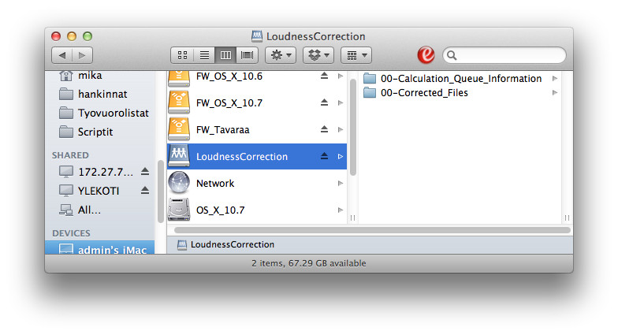
- For normal users the only folders of interest are the root of the
HotFolder and the "HotFolder / 00-Corrected_Files".
- To process a file drag it in the root of the HotFolder.
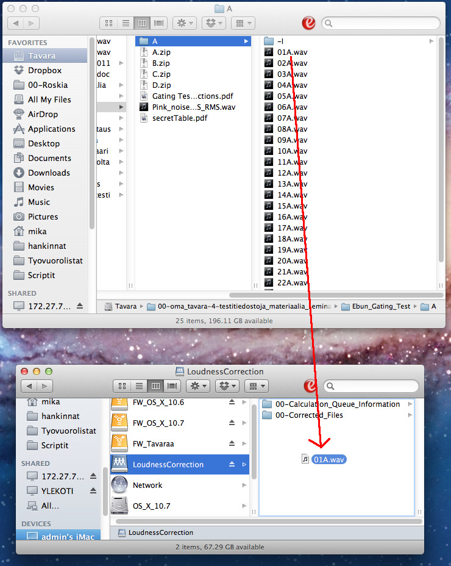
- The file will be copied over the network to the FreeLCS - server.
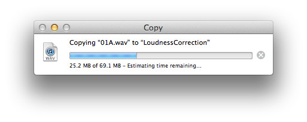
- When the file is copied over navigate to "00-Corrected_Files".
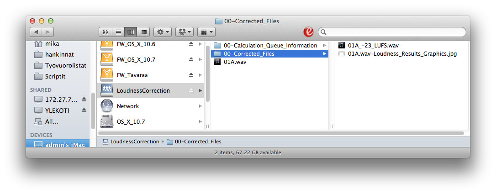
- In a while files start to appear there. The first file will be the
loudness calculation history graphics file and some time after that the
loudness corrected sound file appears. Drag the corrected sound files
back to your computer. Each corrected file will have the string "_-23_LUFS"
added at the end of its name.
- All files in the root of the "HotFolder" and "00-Corrected_Files"
will be automatically deleted after a time period that you defined in
the installer program. By default it is 8 hours.
- A loudness history graphics file shows loudness variations and other
loudness calculation results for the original uncorrected file.
- The brown line shows the short-term loudness, it shows how loudness
varies across time in the file.
- The bright green horizontal line shows the EBU R128 target level that
is -23 on the LUFS scale (0 LU also means -23 LUFS).
- The dark green horizontal line shows the integrated loudness of your
file. It averages the loudness across the length of your whole file into
a single number. This is the loudness of the file and it must be at -23
LUFS to be at the target level according to the EBU R128 recommendation.
- All files will be loudness corrected to have integrated loudness of
-23 LUFS.
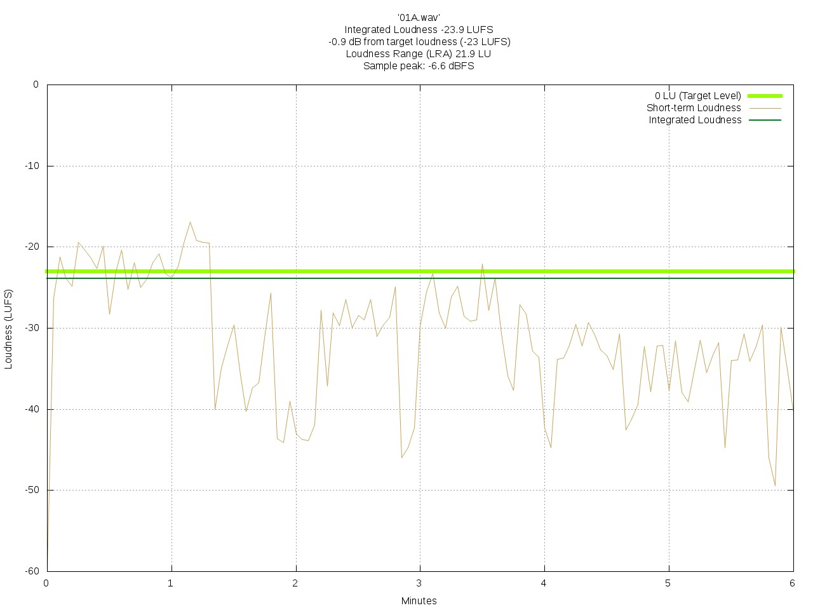
- First click an empty spot on your desktop, this activates the Finder -
program.
- The keyboard shortcut to bring up the "Connect to Server" - window is
cmd + k, so keep the cmd pressed and press k.
- Now you need to have your servers ip-address. Write "smb://your
servers ip address" in the prompt and press "Connect".
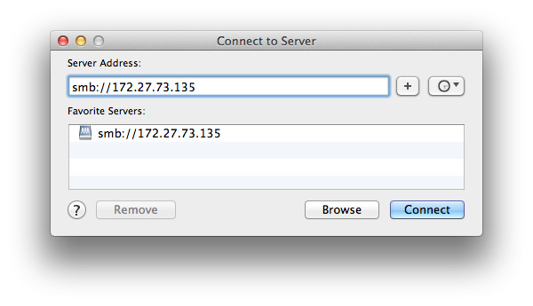
- The next window lets you choose between logging in anonymously or as a
registered user. The network share on the FreeLCS - server is configured
to accept only anonymous logins. So don't write in any username or
password, just click "Guest".
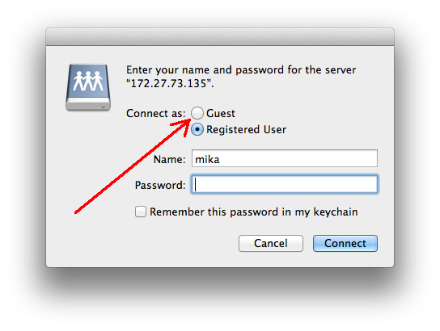
- Now the window changes and looks like the one below. Click "Connect".
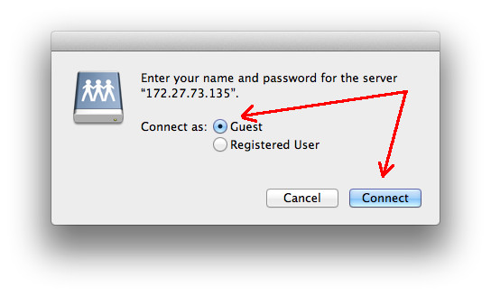
- The FreeLCS network share is mounted and Finder opens a window showing
contents of the HotFolder. Now you can start using the server :)
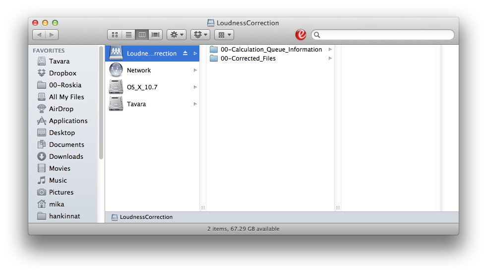
When you have mounted the HotFolder you can make an alias for it that
stays on your desktop. You can then skip all the steps above and mount the
HotFolder just by double clicking on the alias.
- First you must have mounted the HotFolder.
- Open a Finder - window and scroll to the bottom of the device list on
the left panel. You should see an entry there that has the name of your
computer, by default it is "admin's Mac". Click on it.
- Now you should see all mounted devices in the Finder window and "LoudnessCorrection"
should be among them. Start dragging "LoudnessCorrection" out of the
finder window to the desktop and before you let go of the mouse button
press and hold cmd and alt -
buttons. You should see a curved arrow on top of the LoudnessCorrection
- icon. Keep pressing cmd and alt and let go of the mouse button.
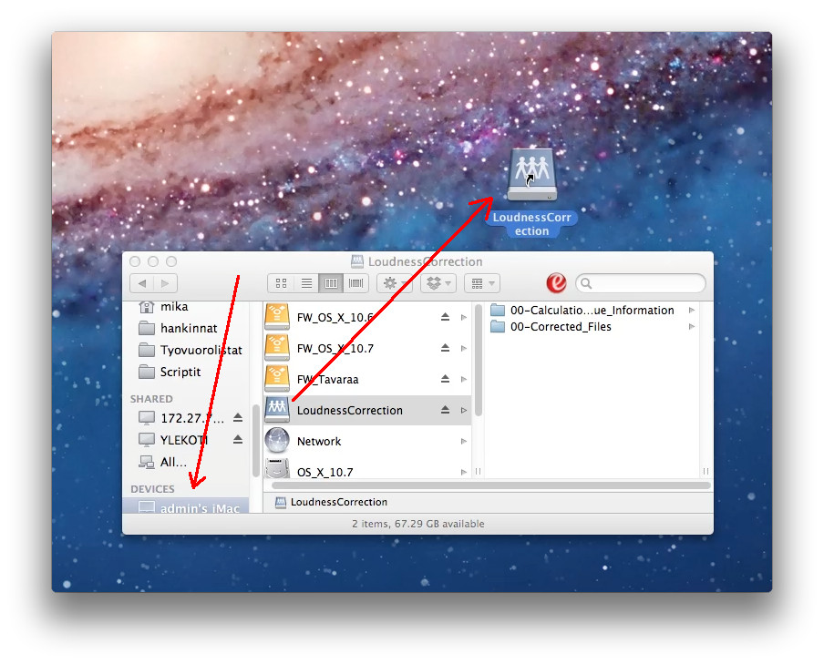
- Now on your desktop there should be a "LoudnessCorrection" - icon with
a curved arrow on top of it. An icon like this is called an alias.
- From now on you can mount the LoudnessCorrection HotFolder just by
double clicking on the alias.
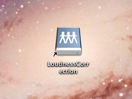
- Click on the "Start" - button and click on the
entrybox on the bottom of the window.
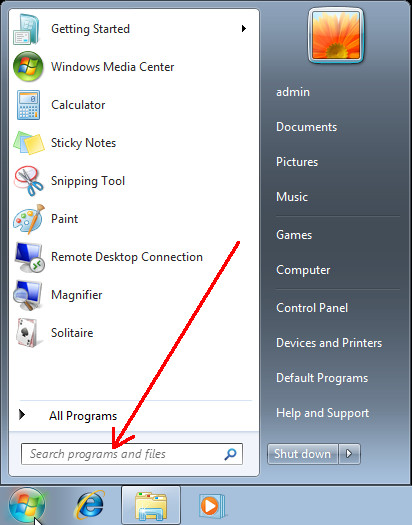
- Write the address of the server into the entrybox. The address
must have two backward slashes at the begging of it and the
address must end with the mount name "\LoudnessCorrection" (See picture
below). Press enter.
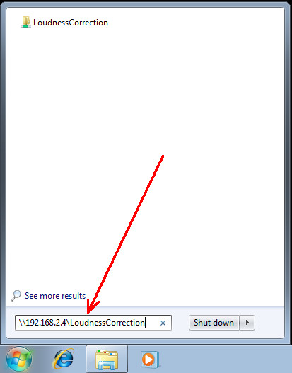
- Windows mounts the HotFolder of the server and opens it in a file
explorer window. Now you can start using the server :)
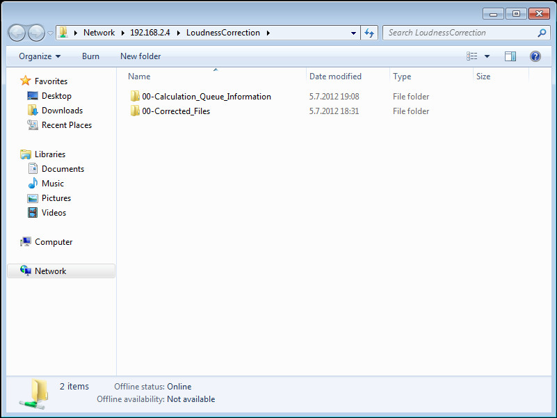
You can tell windows that you want the HotFolder always to be mounted when
the computer starts up.
- Open windows file explorer, click on "Computer". Now some new
options appear on the upper part of the window. Click "Map
network drive".
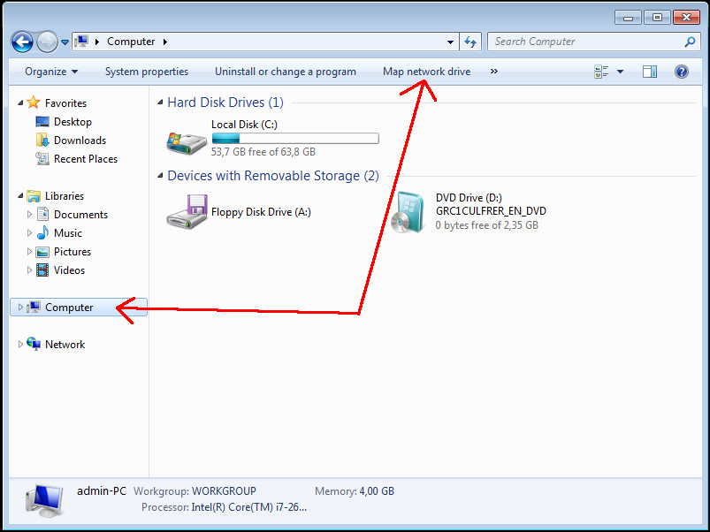
- The next window offers a free drive letter to assign permanently to
the drive. In our example windows offered the letter Z:
- Write the address of the server in the window. The address must start
with two backward slashes and end with "\LoudnessCorrection". Make sure
that the option "Reconnect at logon" is tagged, without
it windows won't make the mount when windows starts up. Click "Finnish".
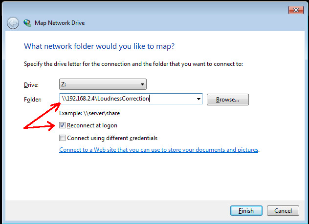
- Windows mounts the HotFolder of the server and opens it in a file
explorer window.
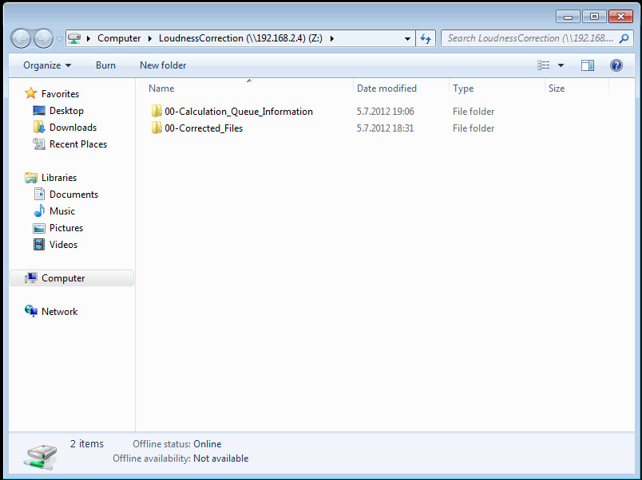
If you selected "Write html progress report" = "yes"
in the installer then an html file will appear in "HotFolder /
00-Calculation_Queue_Information / 00-Calculation_Queue_Information.html".
This file can be opend in an web-browser and it shows an view inside the
loudness calculation queue. The html progress report is updated every 5
seconds and it shows how many files are waiting for a processing slot to
open, what files are currently processed and the names of 100 last files
that were processed and the time processing was finished.
The upper part of the window shows the names of next 10 first files that are
coming in for processing and above that the total number of files waiting in
queue is shown. Date and time are also shown and updated every 5 seconds.
You can use the time display to easily check if the server is up and
running.
The middle gray part shows the names of files that are currently being
processed. The number of files that are simultaneously processed depends on
what you selected as the "Number Of Processor Cores To Use"
in the installer. Each file is simultaneously processed by two processor
cores so if you selected six cores to be used, then three files are
processed at the same time (as in the example picture below).
The bottom of the page shows the last 100 files that were processed.
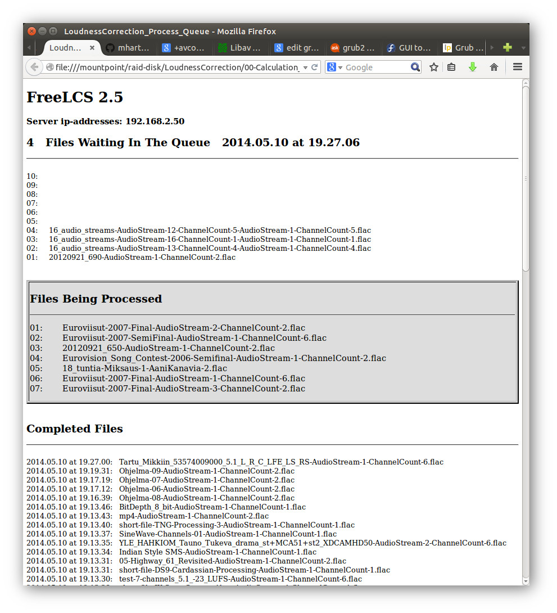
The server needs to have an address that does not change. You network
administrator can give you an static ip-address to use.
- Click on the double arrow on the top right corner of Ubuntu's desktop,
select "Edit Connections".
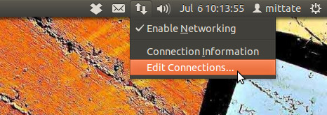
- Click on tab "Wired" and activate the "Wired
connection 1" by clicking on it and click "Edit".
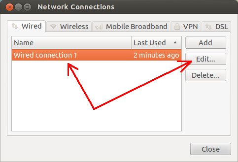
- Click the "IPv4 Settings" - tab and then the text "Automatic
(DHCP)".
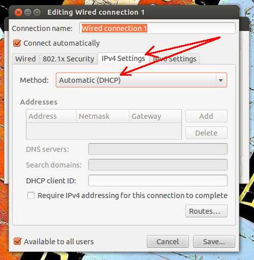
- Select "Manual" from the drop down list.
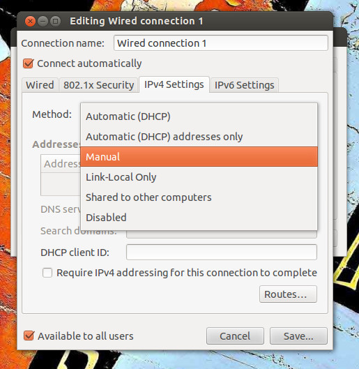
- Click "Add" and type in the details of your network
connection. You need to know the following information which the network
admin will be able to give you.
- The static address for the server.
- Network mask.
- The ip-address of the gateway machine. Gateway machine is the
machine that is connected to your internal network and internet.
Gateway routes traffic from the internal network to internet.
- The ip-addresses of your network name servers (DNS).
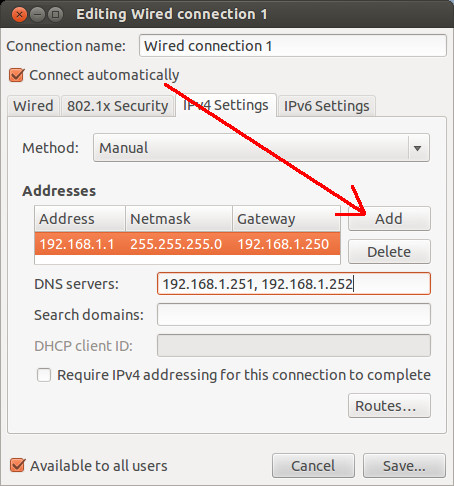
If you have a fast enough processor, for example 1 x Intel Core 2 Duo, then
the processor is able to process files much quicker than a single hard disk
is able to serve it. When multiple files are processed at the same time,
there will be lots of reading and writing going on and the speed of the disk
becomes the bottleneck of the system. You can get more speed out of you
system by setting up three disks in a raid 0 array and putting the HotFolder
onto the raid.
The other thing that affects processing speed is the setting "Number
Of Processor Cores To Use" in the installer. Each file that is
processed ties up two processor cores, but if you have a fast disk and a
hyper-threading capable processor, you might get more speed by setting the
"Number Of Processor Cores To Use" to a bigger number than you have actual
physical processor cores.
After you have set up raid you can find the sweet spot of your system by
doing a simple test.
First collect a bunch of typical files that the server is going to process
when doing real work. The total size of the files should at minimum be
double the size of ram you have in your server, but more files is better.
Save the files on the server, but don't put them in the HotFolder yet.
- Delete all files from the HotFolder.
- Run the FreeLCS installer and set the "Number Of Processor
Cores To Use" to the number of physical processor cores you
have and reboot.
- Wait for two minutes after the computer has booted up so that
LoudnessCorrection has time to start up. (There is a deliberate 90
second delay before LoudnessCorrection is started up).
- Open the html-progress report in your web-browser and see that the
time displayed on the page is advancing. If not then LoudnessCorrection
is not yet running.
- Now you need to make the test files appear in the HotFolder. The
quickest way to make this happen is to create hard links for the test
files in the HotFolder. This makes the files appear immediately without
making physical copies of the files.
date ; ln
/path_to_test_files/* /path_to_hotfolder/
- This command displays the current time which also is the time files
were linked to the HotFolder, take note of the time.
- Wait for processing to finish and take a look at the html-progress
report and see the time the last files processing finished.
- Calculate the time it took.
- Repeat the process from step 1, but add two to the "Number Of
Processor Cores To Use" in the installer.
You should find the fastest processing time in 2 - 4 rounds of the test.
Our test servers sweet spot is to use six cores even though there is only
two physical processor cores. Our test server specs are:
1 x Intel Core 2 Duo Processor
2 GB Ram
1 TB hard disk for Ubuntu
3 x 1 TB hard disks in a software raid 0 array for the "HotFolder".
1 Gbit Ethernet
The speed test results for our test server were:
- Use 2 Cores: 20 minutes 11 seconds
- Use 4 Cores: 14 minutes 10 seconds
- Use 6 Cores: 13 minutes 09 seconds
With more than 6 cores the processing time started to increase rapidly.
Linux software raid configuration is a bit out of the scope of this document
and I don't have much experience with it :) Here are the steps that were
required to get our server's raid set up. The steps I followed were mostly
from here: http://www.linuxhomenetworking.com/wiki/index.php/Quick_HOWTO_:_Ch26_:_Linux_Software_RAID
Warning !!!!!!! Linux knowledge is required here. If you are not
careful these commands can mess up your system :)
- Install 3 Sata disks in the computer. Ubuntu gave our disks
device-names: sdb, sdc , sdd.
- Get root-permission with the command: sudo su
- Partition each disk as type: Primary, fd
(Linux raid autodetect).
- Install Linux raid software: apt-get install mdadm
- Create a raid 0 device from the three disks: mdadm --verbose
--create /dev/md0 --level=0 --raid-devices=3 /dev/sdb1 /dev/sdc1
/dev/sdd1
- If mdadm complains that: "Device Or Resource Busy", then mdadm may
already be using some of the disks and you need to tell it not to. The
command: cat /proc/mdstat lists currently
existing raid-devices, stop them with the command (device name is md127
in the example, check the real device name from the output of: cat
/proc/mdstat): mdadm --stop /dev/md127
now try creating the raid-device again with the command on the previous
line.
- When raid-device creation succeeds without error messages, format the
raid device with the JFS filesystem: mkfs.jfs
/dev/md0
- Now the raid device exists, but Linux forgets about it in the next
boot unless we tell it to configure it again when booting up. The next
commands will save the configuration:
cd /etc/mdadm
mv mdadm.conf mdadm.conf.orig
echo "DEVICE partitions" > /etc/mdadm/mdadm.conf
mdadm --detail --scan >> /etc/mdadm/mdadm.conf
- Next make a directory for mounting the raid: mkdir
-p /mountpoint/raid-disk and make it
readable and writable for everyone: chmod -R 777
/mountpoint
- Get the Universally Unique IDentifier (UUID) for the
raid disk with command: blkid /dev/md0
the command will show output like below:
/dev/md0:
UUID="229f0670-c8c2-4145-b2f4-b1100d9cb918" TYPE="jfs"
- Add the device to your /etc/fstab so that it gets
automatically mounted next time the computer starts up. It is important
to use the UUID instead of the device name (/dev/md0)
to identify your raid disk in fstab. When the kernel gets updated then
your raid device number may change (for example from: /dev/md0
to /dev/md127) and if you used the device name +
number in fstab then the disk won't mount anymore. The UUID of a device
will not change and it can be used to identify the disk instead of its
device name. (Your disk gets a randomly selected new UUID every time it
is reformatted).
- Add the following line in /etc/fstab (change the
UUID to match your disk):
UUID=229f0670-c8c2-4145-b2f4-b1100d9cb918
/mountpoint/raid-disk
auto defaults 0 0
- Now reboot the machine and if the raid-disk was successfully mounted
then make the directory structure on the raid-device readable and
writable for everyone: chmod -R 777
/mountpoint
- Never process audio channels from the same mix separately from each
other. Processing left and right channels of a stereo mix separately
results in loudness being 3 dBs too high. All audio channels of a mix
must be in the same file or audiostream of a file.
- Silence does not affect loudness calculation. You can cut off silence
after loudness correction without affecting the integrated loudness of a
file.
- It might sometimes be useful to 'normalize' raw material early in the
video editing phase of a project. You might have a project that is made
up of several independent parts that need to be loudness corrected
separately. An example of this might be a program where a studio host
talks and plays cartoons for kids. The studio sections of the program
and each cartoon will have different loudness characteristics.
After you have loudness corrected each section separately there might
not be any need for audio post production anymore.
- Loudness correction does not touch the internal dynamics of a file. If
you have too wide loudness variations in a file they will be there also
after loudness correction. Correction only adjusts the 'main level' of a
file. If integrated loudness of a file is -19 LUFS, loudness correction
will make all parts of the file 4 dBs quieter and relative loudness
variations inside the file will remain the same. This is how EBU R128 is
designed to work, you can still have loud and soft parts in your mix,
but it is your responsibility to use them wisely :)
- FFmpeg seems to support MXF - files also, but processing MXF might be
problematic. Inside an MXF - file audio channels of a mix might be
stored together in one file or separately and loudness correction has no
way of knowing what is the case. Loudness correction only works
correctly when all channel of a mix are in the same file.
The server can be made quite maintenance free by:
- Making the server boot automatically after an power outage.
- Making the server install all security updates automatically.
- Making the server automatically reboot weekly so that all security
updates are applied.
To make the server boot automatically after an power outage you need to find
an option in the computers bios that says something like:
"Restart after power failure".
- Then tell Ubuntu to install security updates without human
intervention.
- Press the "windows" key on the keyboard to bring up Ubuntu search
function, write: update
- You should now see an icon for "Update Manager", start it up by
clicking on it.
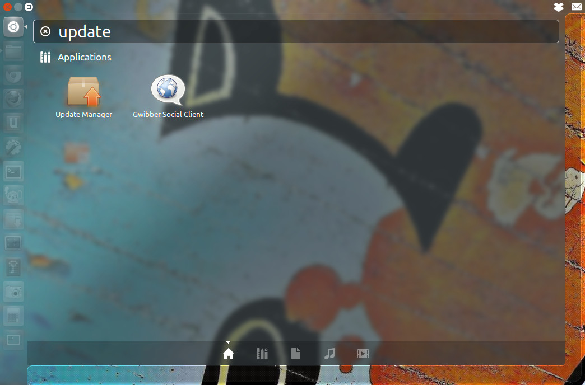
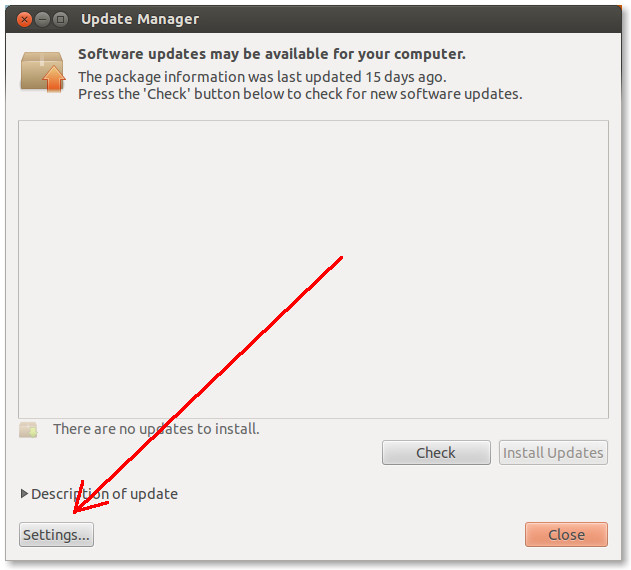
- Click on the "Updates" - tab and then on the box "When
there are security updates:".
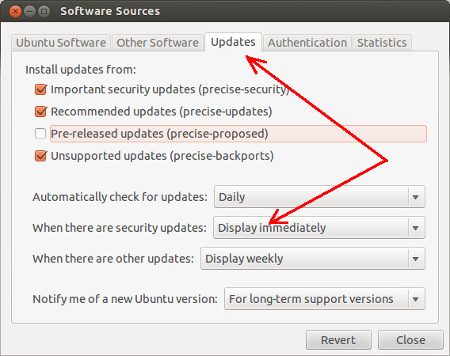
- Select "Download and install automatically" from the
drop down list.
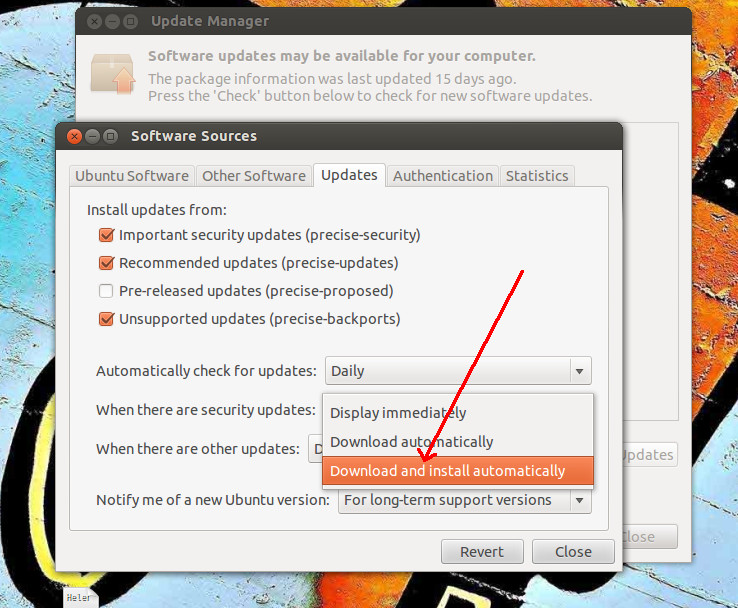
- Ubuntu asks for your password.
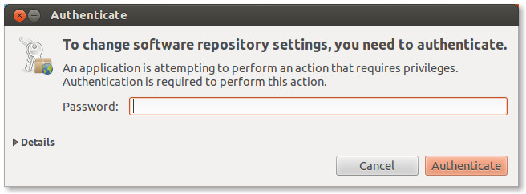
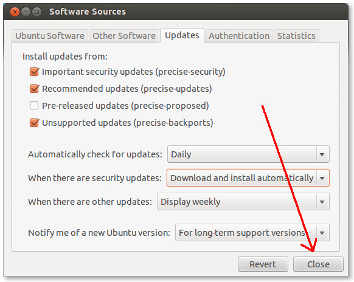
Now security updates are downloaded and installed automatically. Some of
them are applied immediately but some of them (new versions of the Linux
kernel) may come into effect only after a reboot.
- Next we need to make the computer restart automatically once a week. A
good time to reboot might be for example: every monday morning
at 07:00 am.
- Cron can be used to run commands at preset times.
The configuration for Cron is called Crontab. It is a
simple text file and we add our commands to it using a text editor.
- Open a terminal an write in the command: (asks for root password):
sudo crontab -e
Ubuntu will prompt:
no crontab for root - using an empty one
Select an editor. To change later, run 'select-editor'.
1. /bin/ed
2. /bin/nano
<---- easiest
3. /usr/bin/vim.basic
4. /usr/bin/vim.tiny
Choose 1-4 [2]:
This means that Ubuntu wants to know which text based text editor you
would like to use to edit the crontab - file, press "2". This will select
the "nano" - text editor.
Now the text editor opens up in Terminal and shows some text that Ubuntu
automatically inserted into the crontab, navigate to the bottom of it and
add the following line:
00 07 * * 1 /sbin/reboot
This command will reboot the computer every monday at 07:00 am. Save the
crontab - file with the keyboard command ctrl + o, then
press enter to accept the filename. Now that text is saved, exit the editor
with the keyboard command ctrl + x. The crontab comes into
effect immediately, no need to reboot.
The fields in the crontab commandline mean (from left to right):
Field
Allowed Values
Minutes
0-59
Hours
0-23
Day of month 1-31 (* means every
day)
Month
1-12 (* means every month)
Day of week 0-7 (0 or
7 is Sun)
The last field is the full path to the command we want Cron to run.
If you have a NTP - server on your network, you can sync FreeLCS server
clock to it using the ntpdate command. You can use crontab to do this
automatically once a day. See chapter: Setting
up automatic security updates to see how to edit crontab.
The following line in crontab will sync the clock to timeserver
192.168.1.110 every day at 06:25 am.
25 06 * * * /usr/sbin/ntpdate 192.168.1.110
The 2.3 release of FreeLCS introduces a tool that can be used to backup and
restore a FreeLCS installation. This functionality can be used to clone a
installation to any number of Ubuntu machines. Neither the backup nor the
restore scripts requires a graphical desktop and both can be run over a ssh
- connection on a 'headless machine' .
This functionality is targeted at advanced users who know their way around
Linux and the Terminal. The backup script can be found in directory 'Backup_FreeLCS_configuration'
of the FreeLCS installer zip.
Usage
- Install FreeLCS with the normal graphical installer and adjust
settings the way you want.
- Then run '00-backup_freelcs_configuration.sh' to make
a backup of the installation settings. Files needed for restoration and
a restoration script will be created in directory 'freelcs_backup'.
- Copy the contents of dir 'freelcs_backup' to all
machines that you want to have the same configuration and run the
restoration script '00-restore_freelcs_configuration.sh'
on each.
- The restoration script will install all programs and scripts that
FreeLCS needs to function. After restoration all machines will have
identical FreeLCS installation.
- Reboot the machines or start loudness correction scripts manually
(restoration script displays the startup command at the end of the run).
Result: The FreeLCS installation has been cloned to several machines.
Note: Internet connection is required during restoration, since all needed
programs are downloaded and installed from the net
If you have found an error in FreeLCS software or documentation please
report it so that it can be corrected.
If you find that FreeLCS software crashes or behaves in ways it should not,
try first to find out if the problem is caused by a file in the HotFolder.
If a certain file or file format causes the problem please make a copy of
the file / files for later use. The files might be needed to confirm that
the bugfix really solves the problem.
When you file a bugreport keep in mind that the developer needs to be able
to reproduce the bug in his own system in order to fix it. So when reporting
a bug report the following:
- The operating system version that you use (Ubuntu 12.04 32bit or 64
bit)
- The version of the FreeLCS - package that you use.
- The steps that needs to be done in order to make the bug appear.
- If a file causes the bug and you want to send the file to the
developer, then store the file in a cloud file storage system for
example DropBox's Public - folder and add the download link to the bug
report.
- Error messages are good sources for information when hunting a bug, so
if you get one please add it to the bug report.
- If a program just stops working, then it has crashed. In most cases
the program is not able to show any error message to the user because
the program runs in the background. An error message holds valuable
information about what went wrong and if you want to help to sort out
the cause of the error you can run the program manually in Terminal.
When a program is run manually in Terminal the user can see all possible
error messages. Click
here to see how a program can be manually run in the Terminal.
Report bugs here (requires creating an free account): https://sourceforge.net/p/freelcs/tickets/
When you have logged in navigate to the link above and click the "Create
Ticket" - button on the left. When you create a ticket, the
developer gets the bugreport in email.
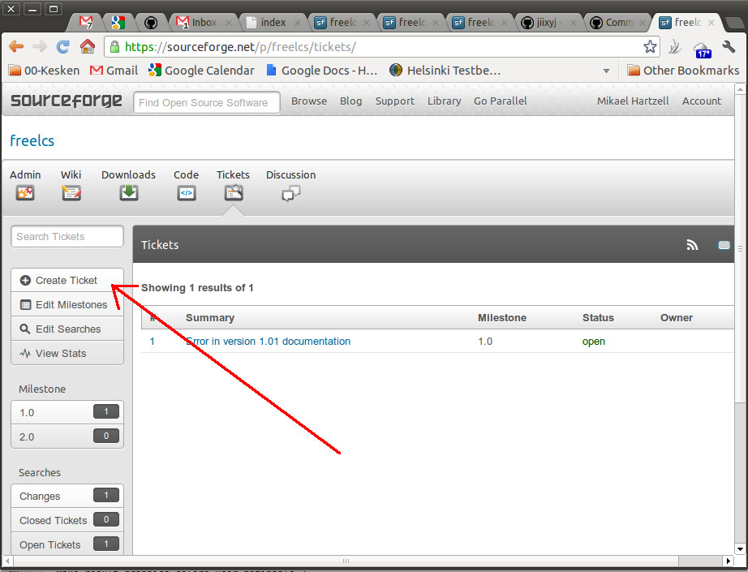
LoudnessCorrection.py
LoudnessCorrection.py is the program that is responsible for processing the
files that appear in the HotFolder. Normally LoudnessCorrection.py runs in
the background and has no way to display error messages to the user. The
program can however be manually started in the Terminal.
- Open the Terminal and stop all FreeLCS programs with the command (asks
for root password): sudo
/etc/init.d/loudnesscorrection_init_script stop
Now there are two ways to run LoudnessCorrection.py, the first one
discards all settings user defined in the installer and runs with default
settings. When you run the program in this mode you need to add the full
path to the target directory at the end of the command. The target
directory is the directory which has Hotfolder "LoudnessCorrection"
inside it. Note that running the program like this the language defaults
to english meaning the program expects the HotFolder name to be "LoudnessCorrection".
- Run the program with default settings: /usr/bin/LoudnessCorrection.py
/mountpoint/
Note that when running in this mode the program outputs a lot of text, it
tells all the time what it is doing.
The second way to run LoudnessCorrection.py is to use the settings that
user defined in the installer. The settings are stored in file /etc/Loudness_Correction_Settings.pickle
- Run the program with user defined settings: /usr/bin/LoudnessCorrection.py
-configfile /etc/Loudness_Correction_Settings.pickle
When running in this mode there will be no output unless the program
crashes.
HeartBeat_Checker.py
- If you have not already done so open the Terminal and stop all FreeLCS
programs (asks for root password): sudo
/etc/init.d/loudnesscorrection_init_script stop
- Run HeartBeat_Checker manually in Terminal: /usr/bin/HeartBeat_Checker.py
-configfile /etc/Loudness_Correction_Settings.pickle
HeartBeat_Checker does not display anything unless it crashes.
Installer.py
- Open Terminal and navigate to the directory where installer.py is
located.
- Make installer executable with this command: chmod 755
installer.py
- Run installer with command: ./installer.py
Installer only displays something if it crashes.
Typical Python error message
If a program crashes then the Python3 interpreter displays an error message
telling what went wrong. A typical Python error message looks like this:
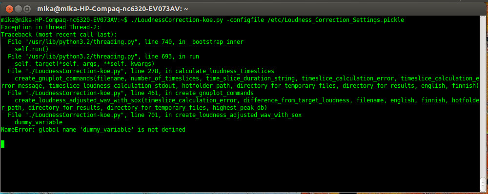
If you get a message like this please copy it to the bug report. This
message is valuable since it tells the developer exactly on which line of
the program code the error happened.
To copy text from the Terminal first select the text to be copied and then
copy it with the keyboard command: shift + ctrl + c
Paste the text to the bug report.
FreeLCS development happens on Github ( https://github.com/mhartzel/freelcs).
All new versions of software are uploaded there before official release.
Unreleased versions are untested so it is recommended that normal users do
not use these versions on their production servers. The reason for this is
that when new program code is added and old is modified it is possible that
new bugs creep in.
If however you have encountered a bug you can navigate to that webpage and
check the changelog there (Documentation/Changelog.txt) to see if the bug
has already been fixed. If you want to test the latest software versions you
can download all files in the git-repository like this:
- Open the Terminal and get root - permissions (asks for root password):
sudo su
- Install git - software: apt-get -y install git
- Navigate to the directory where you want to Download the latest
FreeLCS files.
- Download the git-repository with the command: git clone
http://github.com/mhartzel/freelcs.git
- This will create a new directory 'freelcs' and put all files inside
it.